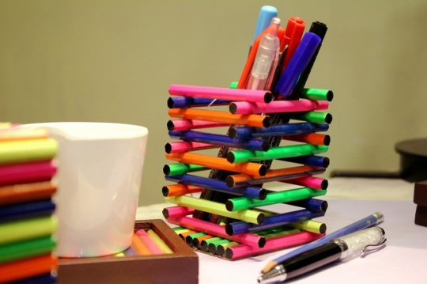

Reuse of Goods
We all have clothes in our wardrobes or curtains, pillow cases, duvet covers, blankets, sheets and towels in our cupboards that we don’t need or want any more. Sometimes we have items that are past their best too... So what can we do with them?
